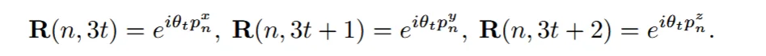
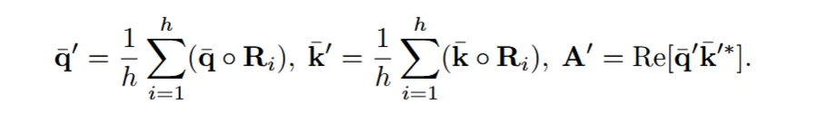
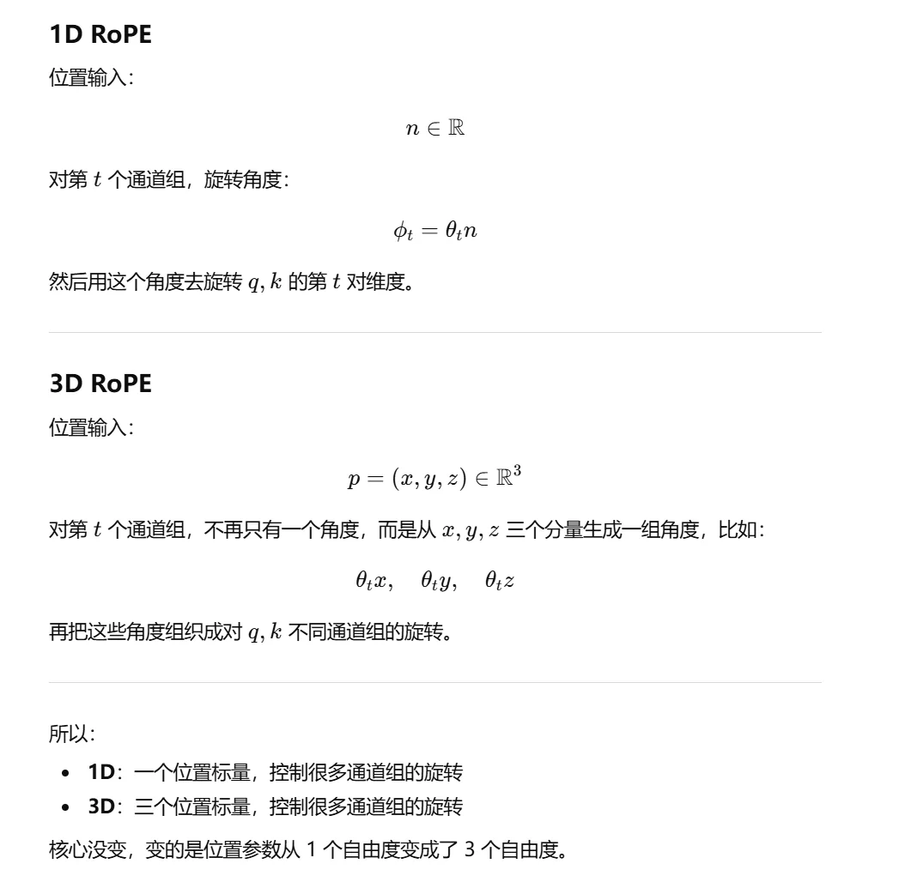

为什么需要 position embedding？
transformer 中的最小的元素是 token，每一个元素有 query，key，value.
因为 transformer 本身的 query 和 key 是通过 \(score_{i,j} = q_i^T k_j\) 得到，但是这样显然 attention 本身是不知道顺序的，比如 dog bites man 和 man bites dog 在 attention 里面是一样的，所以我们需要加上位置编码，来让 attention 知道到底谁在前谁在后。
但是传统的 absolute position embedding 就是直接给每一个token里加上一个位置向量 ：\(x_n + p_n\) 这样来直接描述，但是这样更多的是表示的绝对位置。而我们在attention的过程中其实更注意的是 token 之间的相对位置，而且这样 absolute 的方法其实是作用在 token 上的，而不是直接作用于 attention 机制中，所以attention理解这些位置还是有难度的。
所以应该找到一种，可以表示token之间的相对位置关系，并且能够直接作用在 attention 机制中的 position embedding。普通的 attention 只能看到内容的相似性，希望一种机制在做完 attention 之后，还可以由相对的位置差有关（\(i,j\)）,这样就把不同token之间的相对位置给表示出来了。
Rotary Position Embedding （RoPE）
==RoPE 旋转的从来都不是“位置本身”，而是 token 的 query 和 key。位置只是用来决定旋转角度。==
就是这样情况下诞生的。不用把位置向量直接加在token上，而是通过对于 query 和 key 的改造，让它在 attention 中直接生效。
假设一个 token 的某一个通道里的特征维度是 n 维：\((x_1,x_2,x_3,x_4,x_5,x_6,...)\) 那就每两维度看成一组 \((x_1,x_2)\), \((x_3,x_4)\),...。然后对每一组都做一次旋转，旋转的参数由：旋转频率 \(\theta\) ,第 m 组，这两个参数控制，所以第m组特征的旋转角度就是 \(m \theta\) 。
那么旋转之后的新的 \(q_i' = Rotate(q_i,m\theta)\), \(k_j' = Rotate(k_j,m\theta)\) ，\(query = q_i'^{T} k_j'\) 。这样一做内积，就出现了 \((i-j)\theta\) ,这就意味着两个token之间还关注了相对位置差。 \[ {q_i'}^\top k_j' = (R(i\theta)q_i)^\top (R(j\theta)k_j) \] \[ (R(i\theta)q_i)^\top (R(j\theta)k_j)=q_i^\top R(i\theta)^\top R(j\theta) k_j \] \[ R(i\theta)^\top R(j\theta)=R(-i\theta)R(j\theta)=R((j-i)\theta) \] \[ {q_i'}^\top k_j'=q_i^\top R((j-i)\theta)k_j \] 对于不同维度的特征 RoPE 还给出了不同的频率 ：\(\theta = 10000^{-t/(d_{head}/2)}\) 。这样的话对于 \(t\) 小也就是高频的特征，\(\theta\) 大，位置变一点点，旋转角度就变很多，对近距离差异很敏感。\(\theta\) 小就需要位置变很多，旋转角度才慢慢变，这更适合表示长距离关系。
对于同一个 token 位置 𝑛 ,不同通道组看到的是不同尺度的位置相位：\(n\theta_0,n\theta_1,n\theta_2,...\) 不是靠单一角度表示位置，而是靠多尺度相位组合表示位置。𝑛 大了以后确实会绕圈，但多组频率会共同决定这个位置的整体表示，几乎不会和别的位置完全一样。
这里的数字 n 就相当于一维中的位置，由 n 来决定 token 的 高维 query 和 key 的每一个通道应该旋转多少角度。 （一个位置数字，经过多频率展开，就能控制很多维度的旋转。）
在 Point3R 的 3D Hierarchical RoPE 里就是把一维的token序列转换成了三维的表示空间位置的 分量旋转，\(e^{i\theta_tn} \to {e^{i\theta_tp^x},e^{i\theta_tp^y},e^{i\theta_tp^z}}\) 。频率的来源还是 \(\theta = 10000^{-t/(d_{head}/2)}\) 只是作用对象从 1D index 变成了 3D coordinate。
然后又因为是分层，所以 \(\theta = Base^{-t/(d_{head}/2)}\) ，这个 \(Base\) 可以取不同的值，就构成了不同尺度的 RoPE。用多套不同分布的频率谱，同时看 3D 相对位置。

3D token 的位置 \(p_n = (p_n^x,p_n^y,p_n^z)\) 旋转之后 \(p'_n = (\theta_t p_n^x,\theta_t p_n^y,\theta_t p_n^z)\) 。这三个数作为位置参数，被拿来生成高维 query/key 各通道组的旋转因子。用这 3 个坐标去决定 token 的高维 query 和 key 在各个通道组上该怎么旋转。
而 3D token 的初始化是由 \(p(u,v) = \frac{1}{|R(u,v)|} \sum_{(i,j)\in R_{u,v}} X_{t-1}^{global}(i,j)\) 通过上一帧的点图 在对应的patch上求平均作为这个image token的3D token position。
为了让当前帧 token 能参与 3D RoPE，它分配一个近似的 3D 位置先验。
为什么 image token 的 3D token position 要靠上一帧 pointmap 近似？如果相机快速运动、遮挡严重或输入乱序，这个先验会不会不可靠？

在 1D RoPE 中，位置确实只是一个标量 n，但它并不是被直接当成特征使用，而是作为参数去决定 query/key 各个二维通道组的旋转角度，因此最终被旋转的是高维 token 特征。到了 3D RoPE，中间的区别只是位置参数从 1 个数字扩展成了(x,y,z) 三个坐标，自由度变成 3，但被旋转的对象依然是高维的 query 和 key，而不是这三个坐标本身。